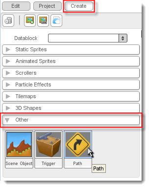
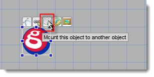

Introduction
In this tutorial, you'll learn how to create paths and attach objects
to them in T2D. A path is a series of points called 'nodes' that are
connected together by various means. The Scene Editor provides a tool
with which paths can be created and edited, and objects can be attached.
The path object in T2D (t2dPath) is a scene object itself, so it can do
things like have velocities applied, react to physics, and even attach
to another path. For this tutorial, we will be using the Torque
2D project called TutorialBase.
Run Torque 2D. If the project is not already loaded, select Open
Project from the File menu, then select TutorialBase/project.t2proj from the list and press OK. Also, if you had previously created a level
with this project it will be loaded. In this case, select New Scene from the File menu.
Creating a Path
Select the create tab in the side panel, scroll down to the Other rollout, and click and drag the GarageGames logo labeled Path into your scene.

Visibly, it won't seem like much happened, but what you just did was
activate the path tool. The path tool allows you to create, move, and
delete path nodes. To create a node, simply click somewhere in the
scene. To move any of these nodes, you can click on them and drag the
mouse.
To delete a node, right click on it. You will notice that the path nodes
follow the snap settings of the editor just like sizing and moving
object. To turn off grid snapping, click on Edit->Preferences... in the menu. In the Scene Editor tab, uncheck Snap to X Axis and Snap to Y Axis.
Create a path with four nodes. When you have finished, press Enter on
the keyboard or click on the arrow (labeled Selection Tool) in the
toolbar. It's very important to note that creating a path with 0 nodes
could result in bugs or a crash. Here is the path I created:
Attaching an Object
Now, create an object by dragging an image from the Static Sprite
rollout in the object library onto the scene. I used the GarageGames
logo. With your mouse hovered over the newly created object, 5 widgets
will appear above it. Select the one labeled Mount this object to
another object.

The object will now be attached to your mouse, following it wherever you
drag it. If the mouse gets near a path node, the object will snap to
it. When this happens, you can click the left mouse button, and the
object will attach itself to the path with the default settings.
Now, select Save As... from the File menu, enter a filename for your
level, and press save. Then, select Run Game from the Project menu. You
should see a black screen with the GarageGames logo moving automatically
along the path you created.
Of course, it's moving kind of slow, and possibly not in the direction
you want it to. Luckily, there are several parameters you can configure
specifically for pathed objects.
Editing the Pathed Object
Make sure the GarageGames logo object is selected, then click on the
Edit tab in the side panel. Scroll down to the section titled Pathing
and click on it to expand the rollout.
Here is a brief description of the purpose of each of the fields:
- Start Node - The start node is the node in the path that
the object will start at. Click the left and right buttons and the
pathed object will move to the corresponding node on the path.
- End Node - The end node defines the end of the path for
this object. This is the node at which the object will stop after it has
completed the specified number of loops, or at which it will perform
its Follow Mode action in Reverse or Restart mode. This option has no
effect if Wrap is selected as the Follow Mode and -1 is selected for
Loops.
- Speed - This is the speed at which the object will follow
the path in world units per second.
- Move Forward - Unchecking this box will reverse the
direction that the object travels around the path.
- Orient To Path - Selecting this option will cause the
object to rotate itself depending on the direction it is traveling.
- Rotation Offset - The rotation offset only affects
objects that have Orient to Path selected. With a rotation offset of 0,
the top of the objects will be facing toward the direction they are
moving. Changing this allows you to specify the exact rotation at which
the object should orient itself.
- Loops - This specifies the number of times the object
will travel around the path. The default value of -1 specifies an
infinite number of loops. When the number of loops has been reached, the
object will stop at the end node.
- Follow Mode - The follow mode tells the path what to do
with the object when it reaches the end node. It comes in three flavors.
In Wrap mode, the object will continue in the same direction around the
path. In Reverse mode, the object will change its direction and the
start node will become the end node. In Restart mode, the object will
warp back to the start node upon reaching the end node.
All of these options are applied specifically to the pathed object, not
the path itself. So, if you had several objects attached to the same
path, they could all configure themselves differently.
Editing the Path
Paths can be edited after creation. To do this, select the path and
click on the widget labeled Edit this path.
This will reactivate the path tool, allowing you to create, edit, or
delete nodes. Paths also allow you to specify the method they use to
interpolate between nodes. There are four options available that can be
selected in the Path rollout of the Edit tab in the side panel.
Here is the description of each of these types:
- Linear - This is the default and simply has an object
move in a straight line from node to node.
- Bezier - The bezier method uses cubic bezier splines to
create a curved interpolation between each node. Each node is guaranteed
to be a part of the path. Bezier paths have two additional parameters,
Rotation and Weight.
These parameters can be edited in the path tool when bezier is selected
as the Path Type by clicking and dragging the handles around each node.
- Catmull - The catmull type uses Catmull-Rom splines to
interpolate between nodes. This method requires no extra tweaking and
automatically generates a smoothly curved path that goes through each
node.
- Custom - The custom method does not actually move any of
the objects automatically. Instead, it executes a callback that can be
defined in script to move the object. This would be useful in cases
where you have a path for an enemy to follow, but you don't want it to
follow it directly. This way, the enemy could still obey things like
collision and gravity, but still have an easy to define and follow path.
The callback looks like this:
function t2dPath::onUpdatePath(%this,%object,%from,%to)
{
//%this is the path object.
//%object is the object following the path.
//%from is the position of the most recently passed node.
//%to is the position of the node being moved toward.
}
Conclusion
This tutorial has covered all the features of the T2D path object.
The best way to figure out the effect these features have on pathed
objects is to experiment. Paths can be useful for certain game types and
menu screens, but their coolest effect comes from combining them with
particle effects to make screen saver looking levels. |